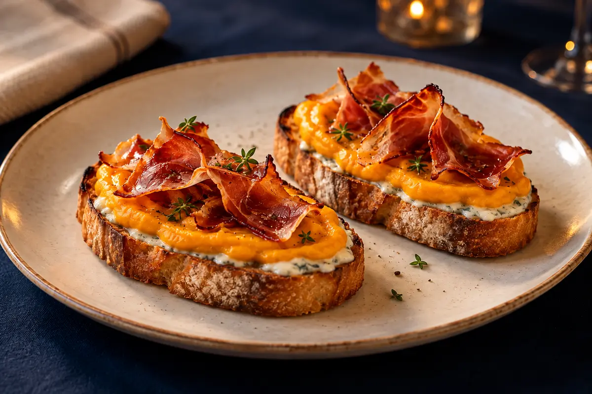
Bruschette con crema di zucca e speck croccante (2 pezzi)
Pane tostato con una spalmata di gorgonzola, crema di zucca vellutata e speck croccante.
0107
Valido solo a cena,
o a pranzo nei festivi

Pane tostato con una spalmata di gorgonzola, crema di zucca vellutata e speck croccante.
0107
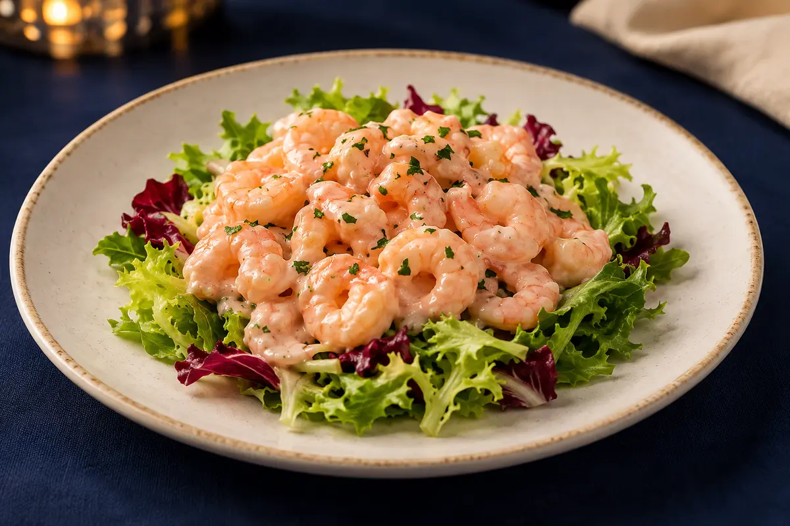
Gamberetti* e delicata salsa rosa, su un letto di fresca insalata.
020310
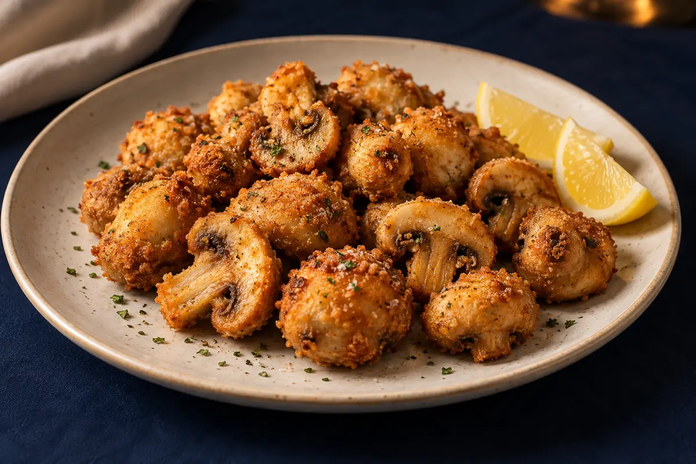
Champignon dorati e croccanti, serviti con spicchi di limone.
0103
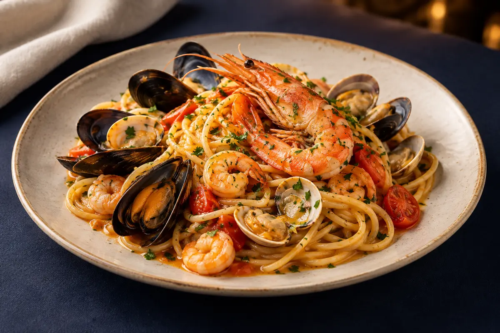
Cozze, vongole, gamberetti* e gamberone*, con un leggero pomodoro.
010214
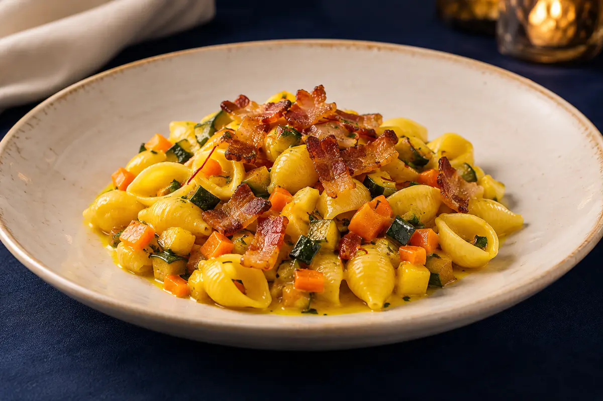
Verdure di stagione, zafferano e guanciale croccante.
010709
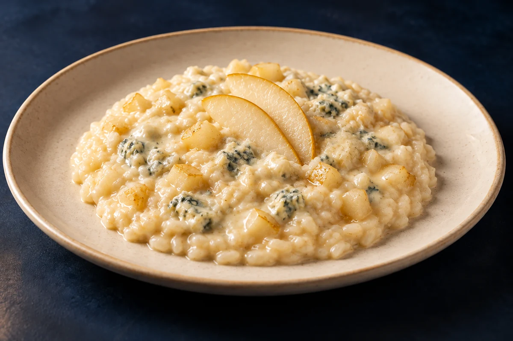
Risotto cremoso con gorgonzola e la dolcezza delle pere.
07
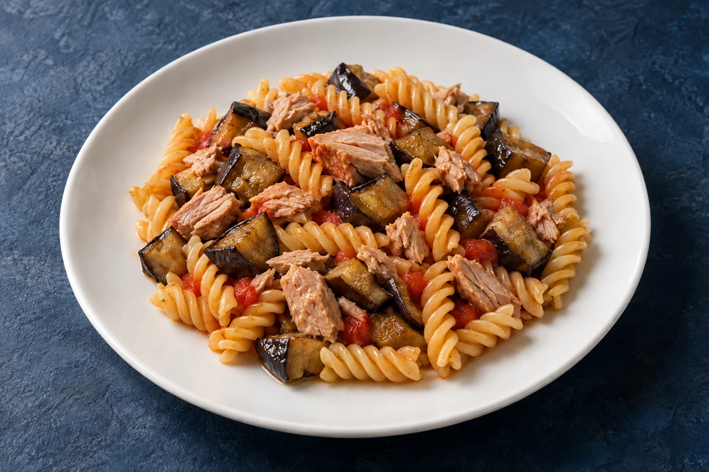
Melanzane morbide e bocconcini di tonno fresco, con poco pomodoro.
0104
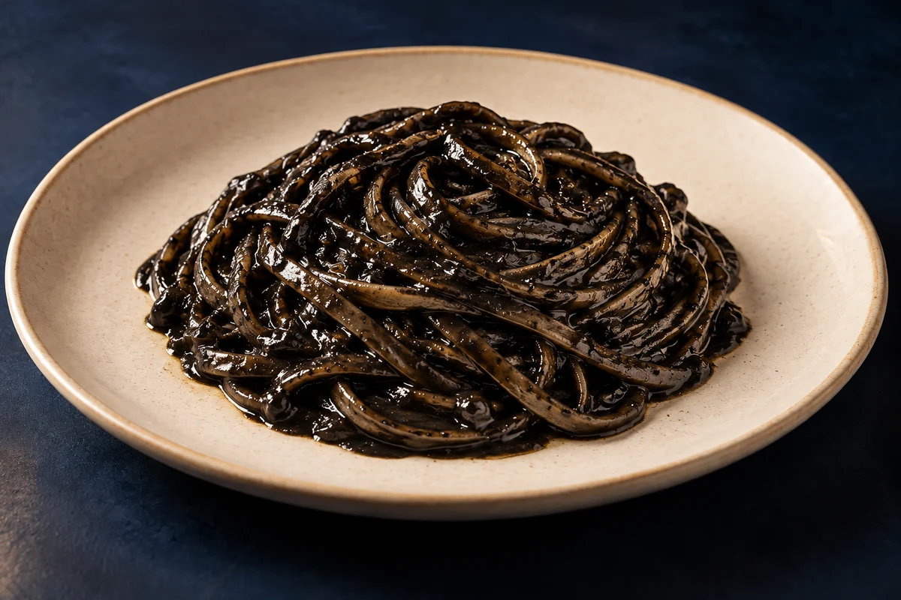
Linguine avvolte in un intenso e vellutato condimento al nero di seppia.
0114
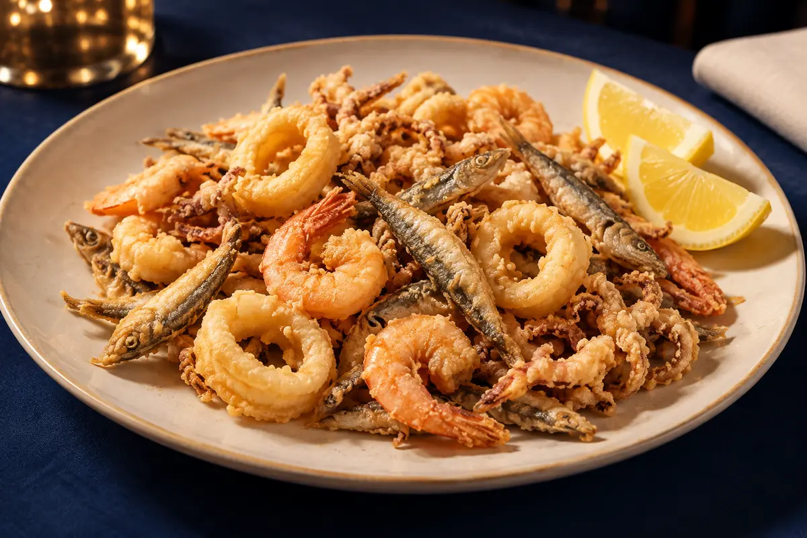
Alici, calamari e gamberetti* in una frittura leggera e croccante.
01020414
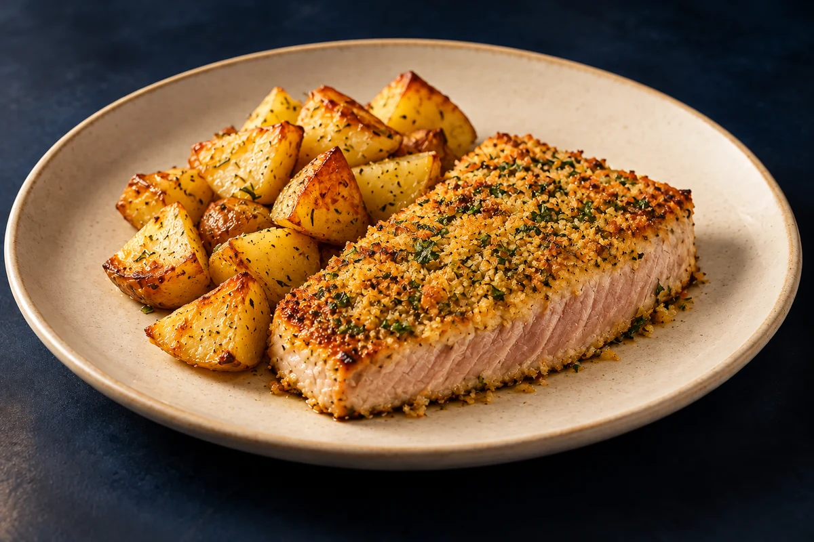
Tonno fresco gratinato al forno alle erbette aromatiche, con patate al forno.
0104
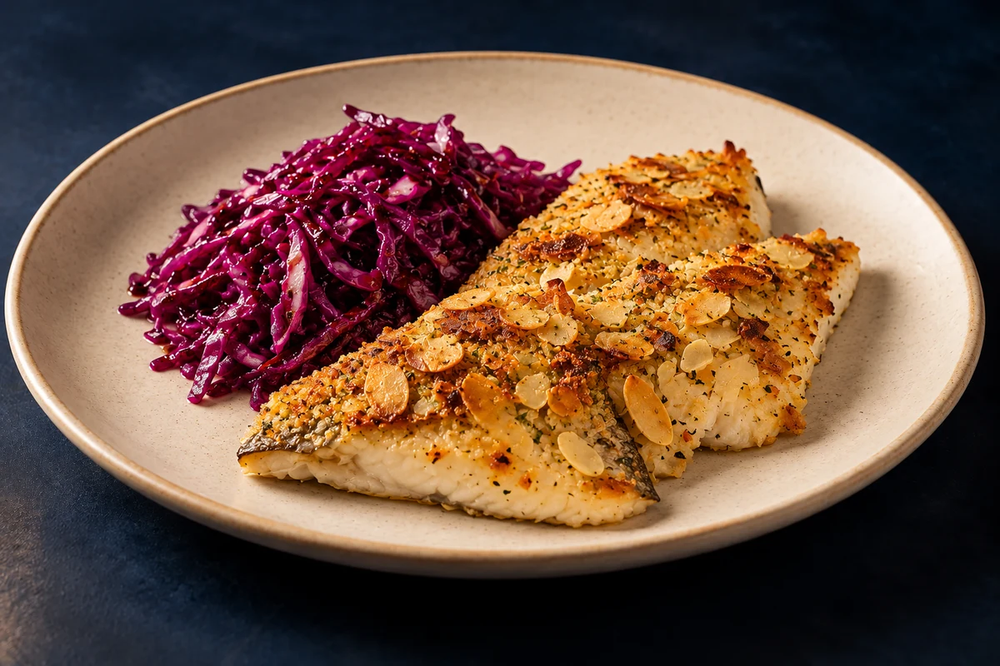
Filetti di branzino in crosta di mandorle, con verza viola cruda condita all’aceto balsamico.
0408
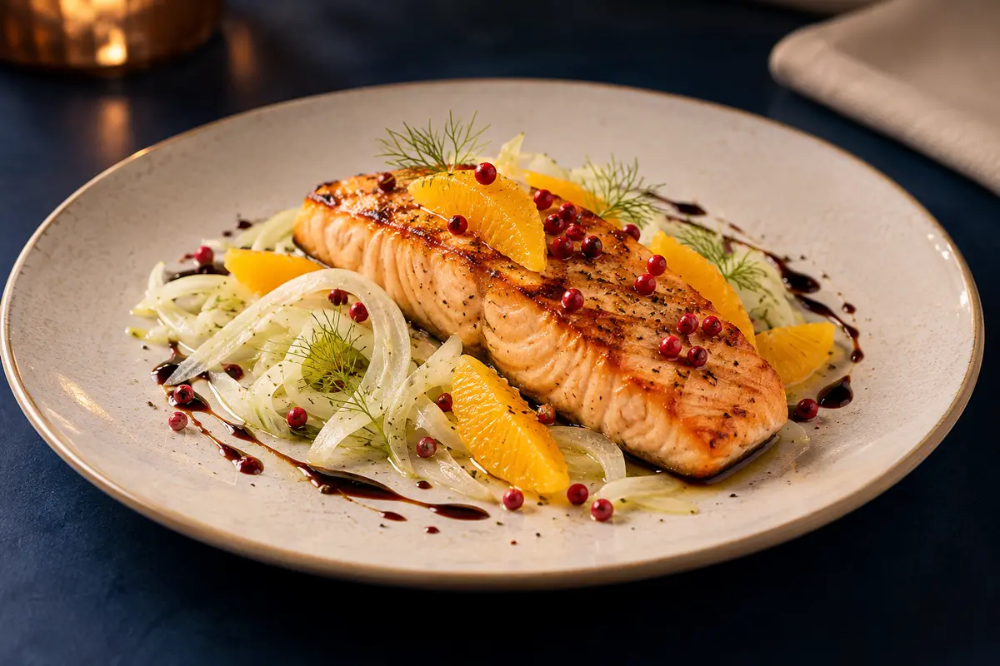
Salmone alla griglia, arancia e pepe rosa, con finocchi crudi e aceto balsamico.
04
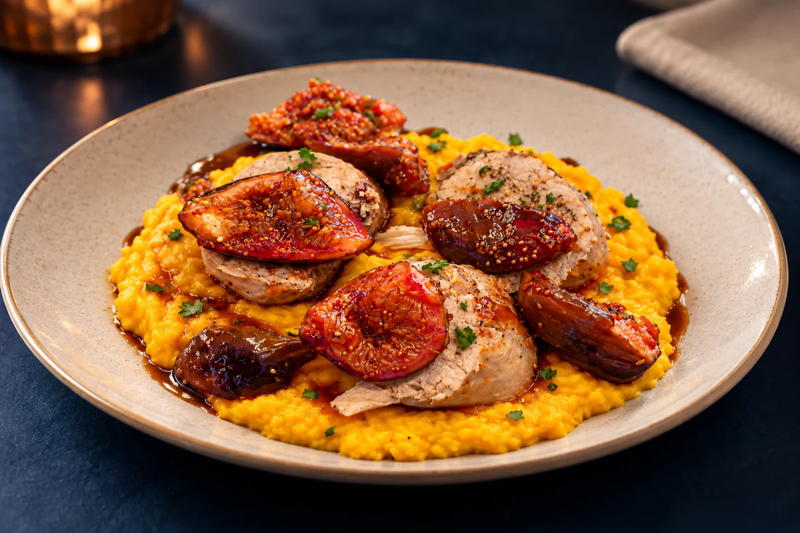
Filetti di maiale con fichi, adagiati su una morbida crema di zucca.
07
Comunicare eventuali allergie · * Ingredienti congelati all’origine.
Consulta la tabella allergeni
Le immagini dei piatti, pur realistiche, sono generate con intelligenza artificiale e hanno scopo illustrativo.
Attendere la conferma del Ristorante per considerare valido l’ordine.
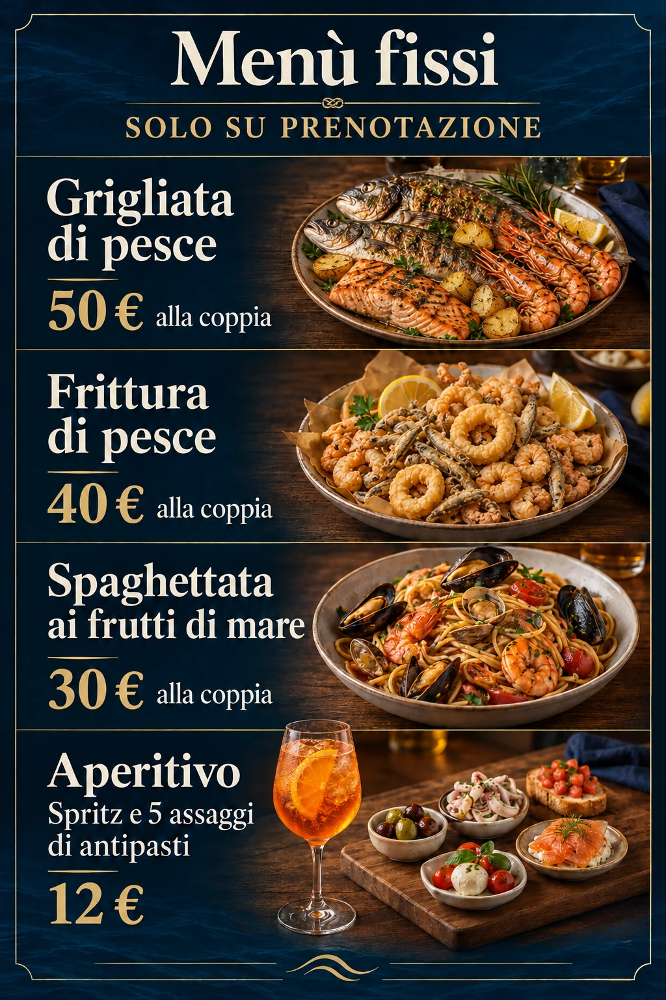
1 orata, 1 branzino, 1 salmone, 4 gamberoni* e patate.
1 litro d’acqua, ½ litro di vino e coperto.
50 € alla coppia2 portate di frittura con alici, calamari e gamberetti*.
1 litro d’acqua, ½ litro di vino e coperto.
40 € alla coppia2 spaghettate ai frutti di mare con cozze, vongole, gamberetti* e gamberoni*.
1 litro d’acqua, ½ litro di vino e coperto.
30 € alla coppia5 assaggi di antipasti sempre diversi.
12 € · aperitivo singolo